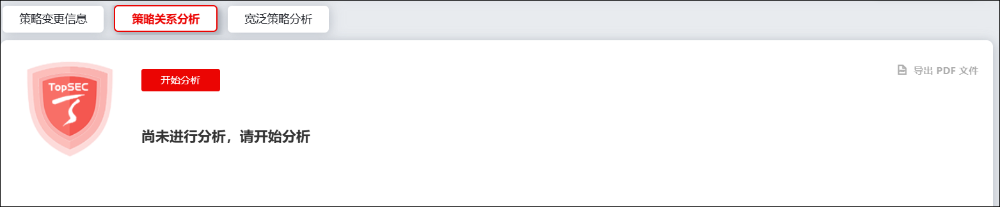
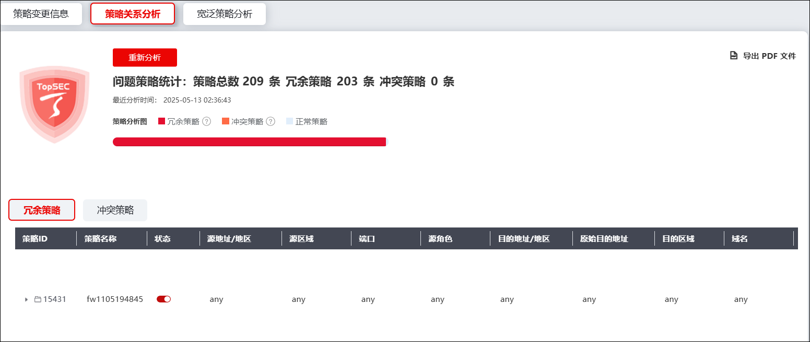
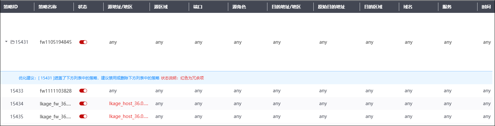
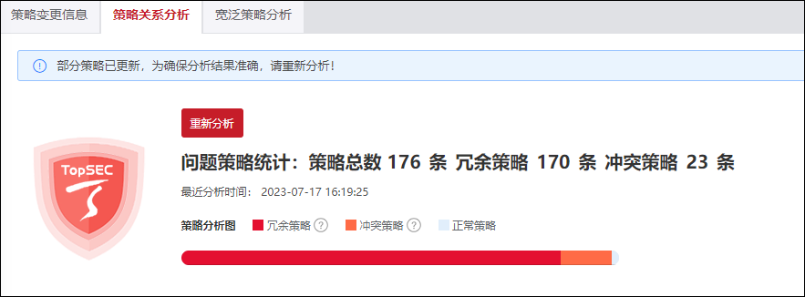

在长期使用中，由于多次添加、修改系统安全策略以及各种联动关系产生大量安全策略，会导致系统策略出现冗余和冲突。此时，使用策略关系分析模块可以对系统现有访问控制策略内容进行关系分析，从中筛选出冗余策略和冲突策略，从而帮助管理员对策略进行更高效的管理。
使用策略关系分析模块的详细操作如下：
选择 ，默认激活“策略关系分析”页签，界面如下图所示。

点击【开始分析】，即可开始策略分析。经过一段时间过后，分析结果会呈现在界面中，如下图所示。

分析结果页面上方展示整个策略分析的综合结果，包括策略总数、冗余策略总数和冲突策略总数；策略分析图展示了正常策略、冗余策略和冲突策略的占比，点击界面右侧的“导出pdf文件”可以将当前分析结果导出为.pdf格式的分析报告。页面下方将冗余策略和冲突策略分析结果分成两个页签展示，管理员可以根据需求查看。以冗余策略为例，NGFW会对冗余策略的冗余内容进行智能分析，展示分析结果并提出修改建议，如下图所示。

单次策略分析结果仅对分析前的系统策略有效，若策略分析后管理员对系统策略进行了任何更改，则界面会出现重新检测提示，避免不必要的错误修改，如下图所示。
